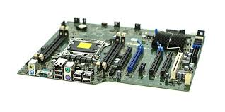

A mother board (also called mainboard main, cirsuit board, system board, baseboard, planar board) is the main printed circuit board in general-purpose computers and expandable system, it hold and allows communications between many of the crucial electronic somponents of a system, such as CPU, memory and provides connectors for other peripherals
A central processing unit(CPU)(also called a central processor, main processor, or just processor), is the electronic cirouity within a computer that executes instructions that make up a computer program, The CPU porforms basic arithmetic, logic, comtrolling, and input/output operations speifided by the in the programs.